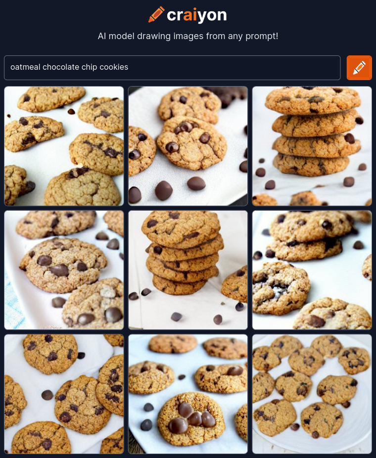

Oatmeal Chocolate Chip Cookies

Description
These decadent oatmeal chocolate chip cookies will keep
everyone coming back for more!
Ingredients
- 1 Cup all-purpose flour
- 1/2 ts baking soda
- 1/2 ts salt
- 1/2 Cup unsalted butter
- 1/3 Cup granulated sugar
- 2/3 Cup light-brown sugar
- 2 ts pure vanilla extract
- 1 Large egg
- 1-1/2 Cups rolled oats
- 1 Cup semisweet choclate chips
Instructions:
- In a medium bowl, whisk together the flour and baking soda;
set aside.
- Combine the butter with both sugars; beat on medium speed until light and fluffy
- Reduce speed to low; add the salt, vanilla, and eggs.
Beat until well mixed, about 1 minute.
- Add flour mixture; mix until almost combined.
- Stir in the oats and chocolate chips. Chill dough for one hour to overnight.
- Preheat oven to 375 degrees.
- Use a small ice cream scoopher (2 tablespoons) to drop heaping
tablespoon-size balls of dough about 2 inches apart on baking sheets
lined with parchment paper.
- Bake until cookies are golden around the edges, but
still soft in the center, 8 to 10 minutes.
- Remove from oven, and let cool on baking sheet 1 to 2 minutes.
Transfer to a wire rack, and let cool completely.